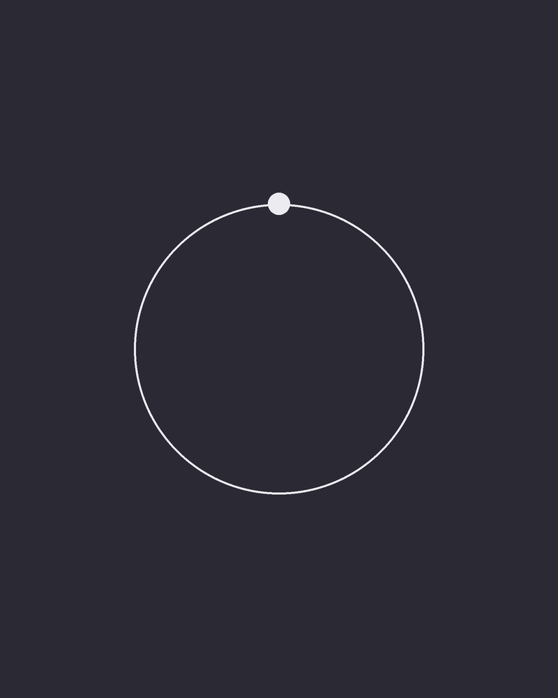

Lise Aasland Ursin
Direktør Oslo
- Prosjektledelse
- Tjenestedesign
- Endringsledelse
Lise har 12 års erfaring med å lede mennesker, prosesser og digitale endringer. Hun gjør komplekse utfordringer forståelige og får gode idéer helt fram til varige forbedringer.